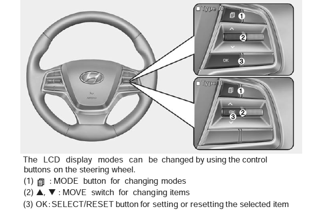

Maintenance System Reminder Reset - Procedure 02
NOTE:
For models with LCD Display.
Service In
Calculates and displays when you need a scheduled maintenance service (mileage or days). If the remaining mileage or time reaches 900 mi. (1, 500 km) or 30 days, "Service in" message is displayed for several seconds each time the ignition switch or Engine Start/Stop Button is set to the ON position.
Service Required
If the vehicle is not serviced according to the already inputted service interval, "Service required" message is displayed for several seconds each time the ignition switch or Engine Start/Stop Button is set to the ON position (The mileage and time changes to "---").
- To reset the service interval to the mileage and days currently established: Press the SELECT/RESET (or OK) button for more than 5 second, then press the RESET button again for more than 1 second.
- To change or deactivate the service interval: Operate the LCD Display to enter the Service Mode (or Service Interval) screen. See appropriate illustration.
Service In OFF
If the service interval is not set, "Service in OFF" message is displayed on the LCD display.

Courtesy of HYUNDAI